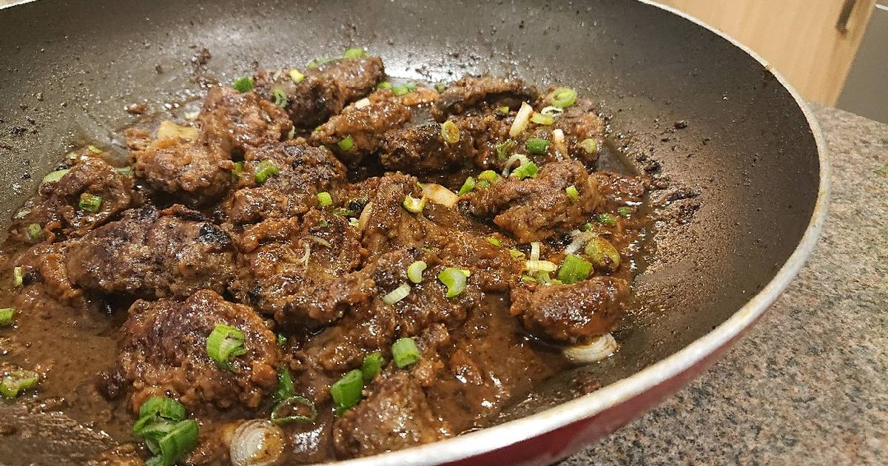

Chicken Adobo with Chicken Livers

Adobo is a well-known Filipino dish. It is a brothy stew flavored with vinegar and soy sauce, bay leaves, and black peppercorns.
Bone-in chicken simmers until the liquid has all but disappeared, transforming the mellow sauce into
a thrilling concenrated glaze. In the slick of fat left over, garlic, onion and chicken liver brown to provide even more flavor.
Ingredients
- 2 tbsp. vegetable oil
- 1 tbsp. annatto seeds
- 3 lb. whole chicken legs, separated into drumsticks and thighs
- 1.5 cups distilled white vinegar
- 1 cup soy sauce
- 1 tsp. whole black peppercorns
- 1 tbsp. mashed garlic
- 1 medium onion minced
- 1 tbsp. sugar
- 1/2 lb. chicken livers, rinsed and pat dried
- 3 bay leaves
Procedure
- Combine everything except the chicken and livers in the large pot, Do not stir.
- Add the chicken, stir to coat it
- Bring to a simmer for 40 minutes, Still don't stir.
- Allow the sauce to thicken, then serve
Optional:You may add hard-boiled eggs to the dish as it is traditionally served with them.
Sauce Thickness
Some people like their sauce a bit runny while others like it thick and some even like their adobo near-dry. It depends on your preference
but the more you reduce the sauce, the more salty your adobo will become.